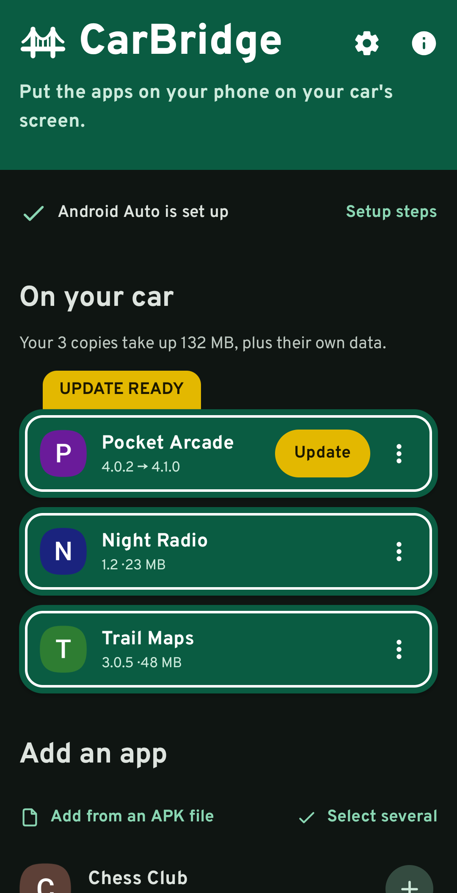

Put your phone's apps on your car's screen.
CarBridge makes a car copy of an app you already have, so Android Auto lists it and shows its full interface on your car's display. Use it while parked, or let passengers use it.

Three steps, all on your phone
Patching, signing and installing happen on the device. The original app and its data are never touched.
Pick an app
Tap Add next to any app you've installed, including Play Store apps split into several files.
Approve one prompt
Confirm Android's install prompt. The copy appears next to the original as "App (Car)" with a bridge badge.
Reconnect Android Auto
Open the car launcher. The copy is there, running its full phone interface on the car display.
Made to stay out of your way
Fills the wide car screen
Copies stretch to the car display, even apps locked to portrait. Keep the portrait layout per app if you prefer.
Knows when a copy is out of date
When the original updates, CarBridge can update its copy by itself the next time your phone charges, or tell you and update every copy in one go.
Warns before it wastes your time
Hides apps that already work in Android Auto, including copies made by other tools, and flags apps likely to refuse to run as a copy.
Your key stays on your phone
Copies are signed with a key held in Android's secure Keystore. An optional backup goes only into a file you save. No accounts, no license server, no telemetry.
Handles big apps
Single and split APKs, large browsers and Unity games. Patching keeps running if you leave the app.
Open copies on the phone too
Copies start empty, so tap one in CarBridge to open it on your phone and sign in before you drive off.
Works from APK files
Make a copy of an app you haven't installed, from an APK or an .apks/.xapk bundle. Open or share an APK to CarBridge from your file manager or browser.
No prompts with Shizuku
For advanced users: with Shizuku running, copies install without asking, even the first time, and get the permissions the original app has.
CarBridge app or CarBridge Patches?
Both put an app's full interface on the Android Auto screen using the same rules. They differ in what they do to the app.
| Aspect | CarBridge app | CarBridge Patches for Morphe |
|---|---|---|
| What you get | A separate copy, "App (Car)", next to the original | The patched app; no extra car copy |
| Original app | Untouched; keeps updating from its store | Replaced, unless Morphe gives it its own package name (as for YouTube) |
| Data and sign-in | The copy starts empty; sign in again | Kept when the patched build replaces the original |
| Works with | Almost any installed app, including Play Store split APKs | Apps you patch in Morphe Manager, from an APK you provide |
| Other patches | No | Yes, e.g. Morphe's YouTube patches |
| After updates | CarBridge notifies you; tap Update | Repatch in Morphe Manager |
| You need | Only the phone | Morphe Manager |
Use the CarBridge app
For store apps you don't otherwise modify, like games, browsers and video apps. Quickest route, and it never touches the original.
Use CarBridge Patches
For apps you already patch with Morphe, or when you want one patched app instead of an original plus a copy.
Install
Requires Android 15 or newer. CarBridge's setup card walks you through turning on Android Auto's developer mode.
Get the app
Obtainium installs CarBridge from this repo's GitHub releases and keeps it updated. Or download the APK directly.
Verify the install with AppVerifier by copying this into it:
A4:68:93:60:A9:1A:49:B1:6F:A7:B1:50:DC:FC:6E:2B:89:21:1A:CD:B9:63:B5:5F:1B:15:70:4A:DA:43:CC:7F
Set up Android Auto
- Open Android Auto settings and tap Version ten times to unlock developer mode.
- Tap ⋮ → Developer settings and turn on Unknown sources.
- In CarBridge, tap Add next to an app and confirm the install prompt.
- Reconnect Android Auto. Your copy is in the car launcher.
Dev builds: every push to dev publishes a pre-release,
CarBridge Dev (org.carbridge.dev), which installs next to CarBridge. In Obtainium, add the repo again with
Include prereleases on and the title filter set to Dev. Use one of the two apps per copied app.
Honest about the limits
CarBridge re-signs the copy. Some apps won't accept that, and some things can't be fixed from outside the app.
- Drive safelyCar use is for passengers or while parked.
- Some apps refuse to runApps that check Play Integrity, their own signature or a license may not work as a copy.
- Copies start freshA copy has no data from the original. Sign in again.
- Back up your keyIf you uninstall CarBridge or clear its data, existing copies can only be updated again by restoring a key backup. Without one, they need to be added again.
- Respect licensesOnly copy apps whose license allows modification, and never share the copies.
Under the hood
For the curious. Verified on a Galaxy S24 Ultra (Android 17, Android Auto 17.9) with VLC, Firefox, GitHub, a Unity game and Morphe YouTube.
Why not just launch the app on the car display?
Each car app gets its own virtual display, and Android's window policy rejects any other app's activity on it
(Activity launch disallowed by policy), whatever the caller's permissions. So CarBridge patches a copy instead.
What changes in the copy?
Android Auto shows an ordinary activity when the app declares:
com.google.android.gms.car.applicationmeta-data pointing to an automotive app descriptorCAR_LAUNCHER,androidx.car.app.category.NAVIGATIONandAPP_MAPSon the launcher activity- The
ACCESS_SURFACEandMAP_TEMPLATESpermissions
The copy is renamed to <package>.car, with provider authorities, permissions and the
resource table renamed to match. Media and car-app service filters are stripped so Android Auto doesn't fall back to its template UI.
Split APKs are signed with the same key and installed in one session.
Credits and license
CarBridge is original GPL-3.0 software. The car-visibility entries come from AABrowser (GPL-3.0). APK editing uses ARSCLib and signing uses apksig. Full details are in the README.